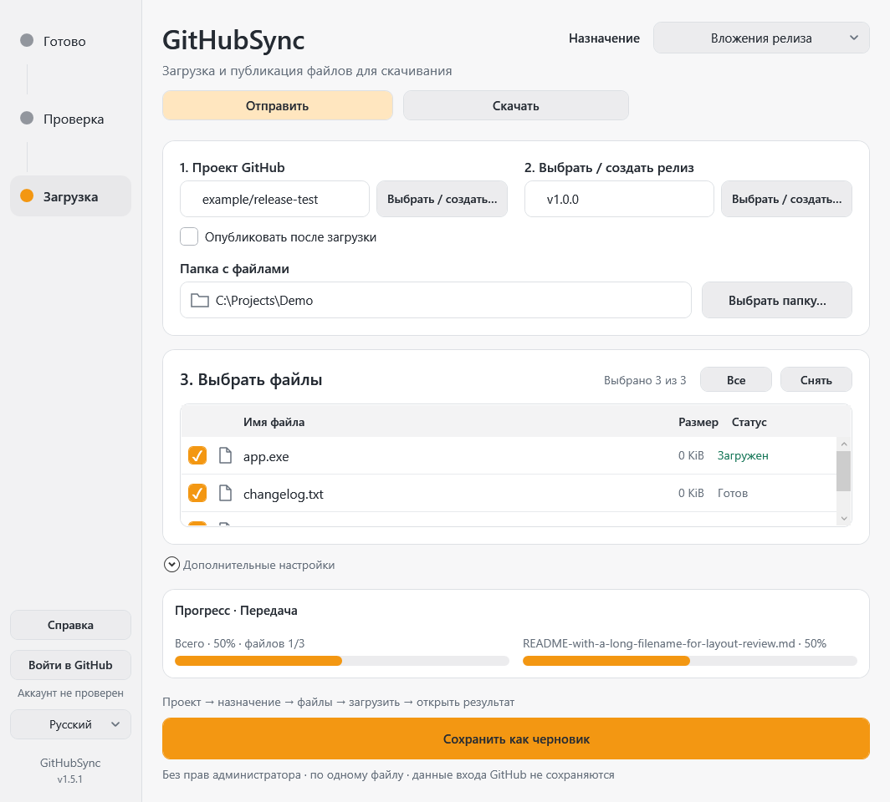
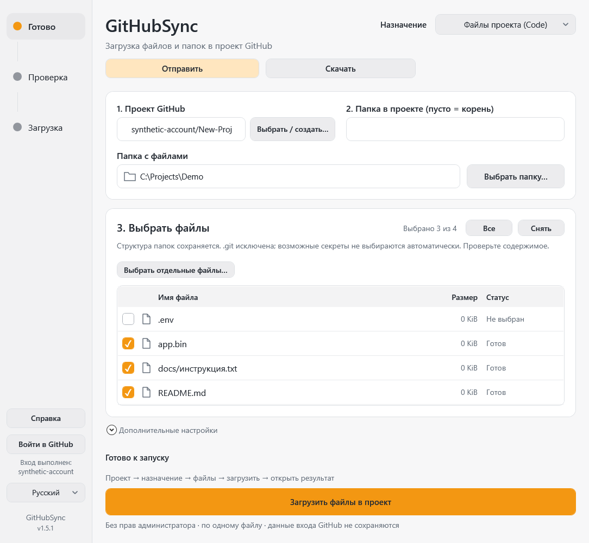
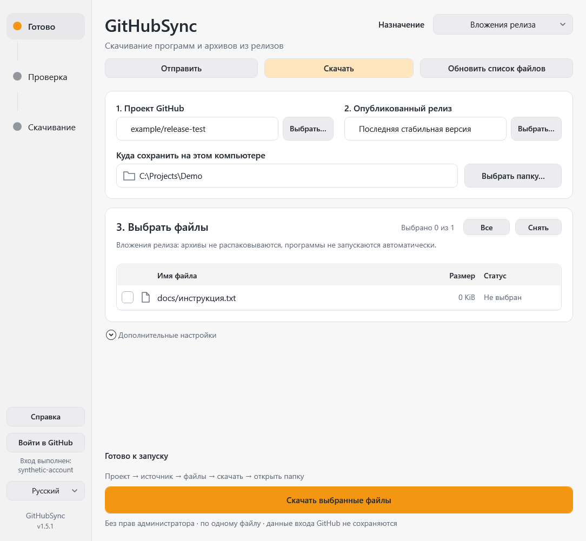

GitHubSync
Отправляйте файлы на GitHub или скачивайте их на компьютер. Передача — только после вашего подтверждения.
Что вы хотите сделать?
Вверху программы выберите Отправить (с компьютера на GitHub) или Скачать (с GitHub на компьютер). Затем выберите назначение: Файлы проекта (Code) для документов и папок или Вложения релиза для программ и архивов. Это ручная передача, не автоматическое зеркало папки: файлы сами не отправляются и не удаляются.
Для первого скачивания: вставьте ссылку на публичный проект → обновите список → выберите папку на компьютере → отметьте файлы → нажмите «Скачать выбранные файлы» и подтвердите.
Первый запуск
- Распакуйте всю portable-папку. Откройте
GitHubSync.exe— не нужно запускать CMD или устанавливать Git отдельно. Не запускайте отдельную EXE изartifacts/build: ей нужны соседние файлы. - Выберите «Русский» слева, если нужно. Первый запуск — Deutsch. Язык сохраняется.
- Для отправки или приватного проекта нажмите Войти в GitHub. Для скачивания публичных файлов вход не обязателен. При необходимости завершите вход, Google и SMS/2FA на официальной странице в браузере. Пароль и SMS-код в программу не вводите.
- На шаге 1 нажмите Выбрать / создать… и выберите свой проект. Можно вставить ссылку на него. «Проект» здесь означает репозиторий, а не раздел GitHub Projects.
Два назначения
Файлы проекта — исходники, документы и папки появятся на вкладке Code, с записью изменений в истории.
Вложения релиза — EXE, ZIP и другие готовые файлы прикрепляются к Releases. Это не список файлов Code. Чтобы отправить папку одним вложением, сначала создайте ZIP.
Файлы проекта: по шагам
- Вверху выберите Файлы проекта.
- Выберите проект. В поле «Папка в проекте» оставьте пусто для корня или впишите относительный путь, например
docs. Нельзя использовать абсолютные пути или... - Нажмите Выбрать папку…: программа покажет файлы всех вложенных папок с относительными путями. Само имя выбранной папки не добавляется: загружается её содержимое. Или используйте Выбрать отдельные файлы….
- Отметьте нужные файлы. Обычные файлы новой папки выбираются автоматически, возможные секреты — нет. «Все» также не отмечает возможные секреты; при необходимости отмечайте их вручную только после проверки.
- Основная ветка определяется GitHub автоматически. В дополнительных настройках можно выбрать другую существующую ветку.
- Нажмите Загрузить файлы в проект. Программа сначала только читает GitHub и покажет список Добавится / Обновится / Без изменений, проект и ветку.
- Проверьте замены и нажмите Загрузить изменения. «Закрыть» отменяет отправку. Все изменения войдут в один коммит. Неизменённые файлы не создают новый коммит; отсутствующие локально файлы на GitHub не удаляются.
- После подтверждения нажмите Открыть файлы проекта: откроется выбранная ветка и папка.
Проверка перед отправкой
Папка и файл .git исключаются, ссылки и junction-папки не обходятся. Файлы .env, приватные ключи и типичные файлы авторизации не выбираются автоматически. Это подсказка по именам, не гарантия обнаружения секретов. Просмотрите содержимое перед отправкой. Правила .gitignore автоматически не применяются: лишние зависимости и сборочные каталоги снимайте вручную.
В Code нельзя отправлять файлы больше 100 MiB. Операция остановится до записи, и программа предложит «Отправить → Вложения релиза». Git LFS не подключается. Существующий пустой проект сначала нужно инициализировать README на GitHub; проекты, созданные из приложения, уже имеют README.
Вложения релиза: по шагам
- Выберите Вложения релиза и нужный проект.
- На шаге 2 нажмите Выбрать / создать…. Выберите существующий черновик либо Создать новый релиз. Введите метку версии, например
v1.0.0, и необязательное название; подтвердите создание. Это пока не публикация. - Выберите папку и отметьте файлы из неё. В этом режиме список содержит только файлы самой папки, без вложенных папок.
- Если включено Опубликовать после загрузки, кнопка называется Загрузить и опубликовать. Если выключено — Сохранить как черновик.
- Проверьте проект, версию, число файлов и последствия в окне подтверждения. Отмена ничего не загружает.
- Дождитесь результата. Публикация выполняется только после подтверждения всех выбранных файлов. Если отправка не удалась, публикация не выполняется; уже отправленные файлы могут остаться в черновике.
Для старых настроек публикация по умолчанию выключена. Для новых — включена, но всегда подтверждается перед отправкой. Опубликованные релизы эта версия не изменяет: создавайте новую версию.
Где результат и как поделиться
Для черновика нажмите Открыть черновик. В браузере войдите в аккаунт с правом доступа и найдите вложения Assets или список файлов внизу формы редактирования. Черновик не виден посетителям без нужных прав.
Позже можно нажать Опубликовать релиз и подтвердить публикацию отдельно. После перезапуска выберите тот же проект и черновик, отметьте файлы и нажмите Проверить в дополнительных настройках: отправки не будет, появятся действия для существующего черновика.
После публикации доступны Открыть релиз, Копировать ссылку на страницу релиза и Ссылки на файлы — отдельная кнопка копирования для каждого вложения. Ссылку выбранного вложения также можно скопировать через контекстное меню имени файла.
Создать проект в программе
В выборе проекта нажмите Создать новый проект. Введите имя, проверьте аккаунт и видимость. По умолчанию проект приватный. Если снять флажок, проект будет публичным — содержимое станет доступно другим пользователям. Нажмите Создать проект на GitHub для явного подтверждения. Создаётся личный репозиторий с начальным README; организации не поддерживаются этим действием. Само создание проекта не загружает выбранные файлы и не публикует релиз.
Если ответ о создании потерян, сначала обновите список проектов или релизов: запрос мог выполниться. Программа не повторяет создание вслепую.
Прогресс, ошибки и дополнительные настройки
Прогресс закреплён над нижними действиями. Переданные байты не всегда означают завершение: для Code нужно подтверждение коммита в ветке, для Releases — подтверждение вложений GitHub, для публикации — подтверждение опубликованного релиза. Если длительность неизвестна, показан индикатор активности, а не выдуманный процент.
Проверить ничего не отправляет: в Code показывает будущие изменения, в Releases проверяет черновик и выбранные вложения. Сохранить записывает настройки локально. При начале загрузки настройки сохраняются автоматически.
Совпадающие вложения релиза пропускаются. Конфликт имени или размера не приводит к автоматическому удалению. GitHub может менять специальные знаки в имени; программа учитывает ID, исходную подпись и однозначный SHA-256 для старых переименованных файлов при наличии digest.
При потере ответа о записи или публикации сначала откройте результат на GitHub или выполните проверку. Не удаляйте вложения и не повторяйте операцию вслепую. При ошибке авторизации проверьте вход и права, при ошибке ветки — её защиту. Технический журнал ошибок: GitHubSync-error.log.
Файлы программы и совместимость
Сохраняйте вместе EXE, runtime, docs, assets и PS1-файлы. Без установки и прав администратора; для GitHub нужен интернет. Токен не записывается в настройки; авторизацией управляет Git Credential Manager.
Старые config.json и ui-settings.json читаются. Списки файлов двух режимов хранятся раздельно. Настройки в папке программы должны быть доступны для записи. Начальный размер — 1080×1040 логических пикселей с ограничением экраном; окно можно уменьшать вручную. Эта HTML-справка открывается обычным браузером без интернета.


Отправить или скачать
Сначала выберите действие сверху. Отправить переносит ваши локальные файлы на GitHub. Скачать сохраняет файлы GitHub на этот компьютер. Это не автоматическое зеркало: программа не удаляет лишние файлы и не переносит изменения без разрешения.
Для отправки нужен вход и право записи. Публичный проект можно скачивать без входа. Для приватного проекта нажмите «Войти в GitHub», подтвердите Google/SMS/2FA в браузере; пароль в программу не вводите.
Скачать файлы проекта
- Нажмите Скачать, выберите Файлы проекта (Code).
- Вставьте ссылку на репозиторий в шаге 1. Это адрес вида
https://github.com/owner/project, не GitHub Projects. - В шаге 2 оставьте пустое поле для всего проекта или укажите папку, например
docs. В дополнительных настройках можно выбрать ветку; по умолчанию используется основная. - Нажмите Обновить список файлов. Список показывает относительные пути всех обычных файлов выбранной папки, включая вложенные папки.
- Нажмите Выбрать папку… и выберите, куда сохранить. Отметьте нужные файлы или нажмите «Все» для всей папки.
- Нажмите Скачать выбранные файлы. Проверьте проект, локальную папку, список «Скачается / Заменится / Совпадает». Замены требуют подтверждения и сохраняют резервные копии.
- После подтверждения дождитесь проверки файлов. Нажмите Открыть локальную папку.
В локальную папку попадает содержимое выбранного корня GitHub с сохранением вложенной структуры. Ветка фиксируется на конкретном коммите, поэтому одна задача не смешивает разные версии. История Git, подмодули, ссылки и реальные объекты Git LFS не скачиваются. Code API ограничивает большие файлы; для готовых крупных архивов используйте вложения релиза.
Скачать программу или архив

- Нажмите Скачать, затем Вложения релиза.
- Вставьте ссылку на проект. По умолчанию выбрана последняя стабильная опубликованная версия; кнопка выбора позволяет указать другую опубликованную версию.
- Нажмите Обновить список файлов, выберите локальную папку и отметьте EXE, ZIP или другие вложения.
- Нажмите Скачать выбранные файлы, проверьте список и подтвердите.
- После успеха откройте локальную папку. Архивы автоматически не распаковываются, EXE не запускаются. Приватный релиз остаётся доступным только тем, у кого есть доступ к проекту.
Пауза, докачка и резервные копии
Во время скачивания нажмите Приостановить скачивание. При обрыве сети или выходе из программы уже скачанные части сохраняются. Продолжить скачивание… возвращает задачу и выбранные файлы: снова нажмите основную кнопку и подтвердите свежую проверку.
Докачка возможна, если сервер поддерживает диапазоны байтов и это тот же файл. Если сервер прислал файл целиком, программа начинает этот файл заново и не дописывает его поверх старых частей. При изменившейся версии нужно обновить список.
Готовый файл появляется только после проверки размера и доступной контрольной суммы. Если GitHub не предоставил сумму вложения, программа сообщает о проверке только размера. Части хранятся в .githubsync/partials, резервные копии заменённых файлов — в .githubsync/backups внутри вашей папки. Не удаляйте части незавершённой задачи. Токены туда не записываются.
Докачка относится к скачиванию. При отправке вложений GitHub уже подтверждённые файлы пропускаются, но незавершённый файл приходится отправлять заново.
Трей и обновления GitHub
Крестик скрывает окно в системный трей, но подтверждённая передача продолжается. Двойной щелчок по значку открывает окно. Во время передачи две стрелки движутся в трее и значке окна. Для завершения используйте Выход в меню трея.
Программа проверяет один выбранный источник каждые 15 минут, пока она запущена. Флажок в дополнительных настройках отключает наблюдение; «Проверить обновления» запускает проверку вручную. Новая версия или изменённые файлы вызывают уведомление, а не автоматическую передачу. Обновите список, посмотрите изменения и разрешите скачивание сами. Автозапуск Windows не включается.
Если фоновая проверка требует входа, она не открывает браузер сама: откройте окно и войдите вручную. При «Выход» скачивание приостанавливается; прерывание отправки требует предупреждения, поскольку часть файлов уже могла сохраниться на GitHub.
OneDrive и ошибки отправки
Обычные облачные папки OneDrive разрешены как источник и место сохранения. Настоящие ссылки и junction-папки, перенаправляющие путь, по-прежнему не используются. Если облачный файл недоступен, проверьте соединение и доступ к нему в Проводнике.
При отправке в Code показывается передача байтов. Настройка времени HTTP в дополнительных параметрах действует и здесь; по умолчанию это три часа, а не две минуты. Передача байтов ещё не означает подтверждение коммита в ветке.
Ошибка показывает этап и HTTP-код: 401 — войдите снова; 403 — проверьте права/SSO/лимит; 413 — используйте вложения релиза для большого файла; 422 — проверьте размер, правила ветки и права workflow. При обрыве соединения или неизвестном результате сначала откройте GitHub и проверьте состояние. Программа не повторяет запись вслепую. Для сообщения об ошибке достаточно этапа, HTTP-кода и Request ID; токены не присылайте.